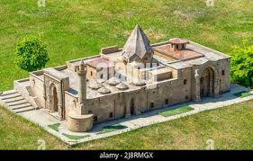
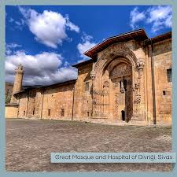
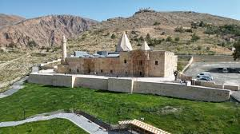
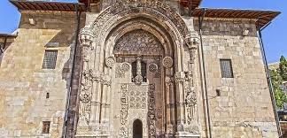
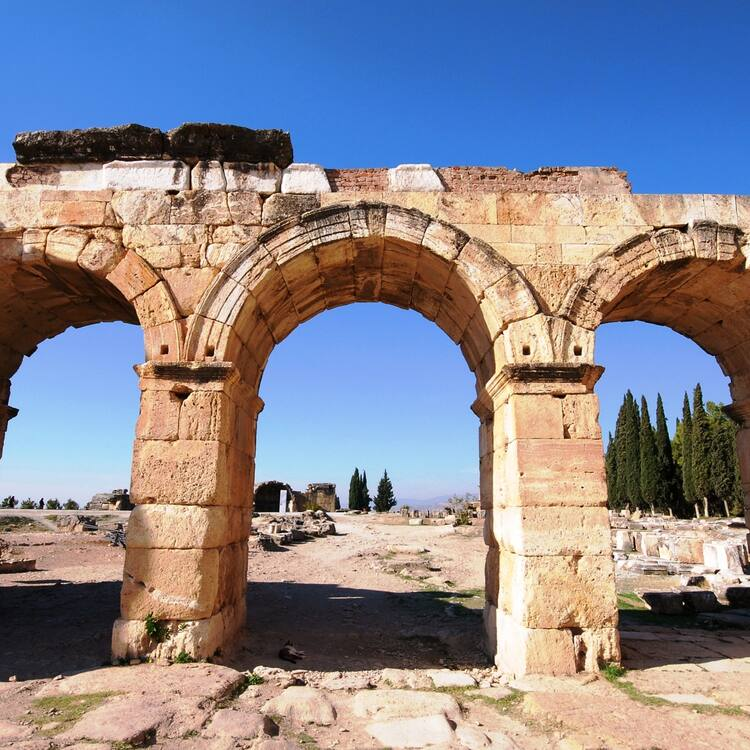
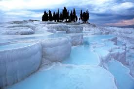
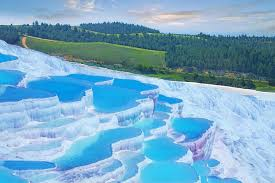
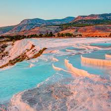

Located on the slopes below the castle of Divriği, Sivas Province in central eastern Turkey, the Great Mosque and Hospital of Divriği is a remarkable building combining a monumental hypostyle mosque with a two storey hospital, which includes a tomb. Founded by the Mengücekide emir Ahmed Shah following the victory of the Seljuk Turks over the Byzantine army at the battle of Malazgirt in 1071, the mosque is dominated externally by the hexagonal, pointed roofed dome over its mihrab (prayer niche), a cupola over the ablutions basin in the centre of the prayer hall and elaborately carved monumental stone portals on the north and west. Internally, four rows of four piers create five naves roofed by a variety of intricately carved stone vaults. The adjoining hospital, the Darush-shifa, was founded by Ahmet Shah’s wife Turan Melek and designed by the architect Hurrem Shah, in 1228-1229. It is entered via a monumental, elaborately carved stone portal on the west, leading into a double height atrium formed by four massive piers supporting a dome with an oculus over a central pool, around which are located the hospital rooms. The highly sophisticated technique of vault construction and a creative, exuberant type of decorative sculpture – particularly on the three doorways, in contrast to the unadorned walls of the interior – are the unique features of this masterpiece of Islamic architecture. The variety of the carved decoration indicates that is was carried out by different groups of craftsmen. The main characteristic of the designs featured in the portals is their uniqueness: each is distinct from other decorations. As well as portals, all bases, shafts and capitals of the columns, and the inner surface of the dome and the vaults, were decorated in a distinct and unique style. There are no other examples of the three-dimensional and intricate geometric styles and flowing figures of plants. The vaulting of the hospital room is comparable in scientific achievement to that of the prayer hall of the Mosque, and shares the splendid unity of the Great Mosque.
Read more    Deriving from springs in a cliff almost 200 m high overlooking the plain of Cürüksu in south-west Turkey, calcite-laden waters have created an unreal landscape, made up of mineral forests, petrified waterfalls and a series of terraced basins given the name of Pamukkale (Cotton Palace). Located in the province of Denizli, this extraordinary landscape was a focus of interest for visitors to the nearby Hellenistic spa town of Hierapolis, founded by the Attalid kings of Pergamom at the end of the 2nd century B.C., at the site of an ancient cult. Its hot springs were also used for scouring and drying wool. Ceded to Rome in 133 B.C., Hierapolis flourished, reaching its peak of importance in the 2nd and 3rd centuries A.D., having been destroyed by an earthquake in 60 A.D. and rebuilt. Remains of the Greco-Roman period include baths, temple ruins, a monumental arch, a nymphaeum, a necropolis and a theatre. Following the acceptance of Christianity by the emperor Constantine and his establishment of Constantinople as the ‘new Rome’ in 330 A.D., the town was made a bishopric. As the place of St. Philip’s martyrdom in 80 A.D., commemerated by his Martyrium building in the 5th century, Hierapolis with its several churches became an important religious center for the Eastern Roman Empire. The combination of striking natural formations and the development of a complex system of canals, bringing the thermal water to nearby villages and fields, is exceptional. The springs are the source of a hydraulic system extending 70 km northwest to Alasehir and westwards along the valley of the Menderes River. Pamukkale forms an important backdrop to the original Greco-Roman town of Hierapolis and the cultural landscape which dominates the area. Criterion (iii): Hierapolis is an exceptional example of a Greco-Roman thermal installation established on an extraordinary natural site. The therapeutic virtues of the waters were exploited at the various thermal installations, which included immense hot basins and pools for swimming. Hydrotherapy was accompanied by religious practices, which developed in relation to local cults. The Temple of Apollo, which includes several Chtonian divinities, was erected on a geological fault from which noxious vapours escaped. The theatre, which dates from the time of Severus, is decorated with an admirable frieze depicting a ritual procession and a sacrifice to the Ephesian Artemis.
Read more    